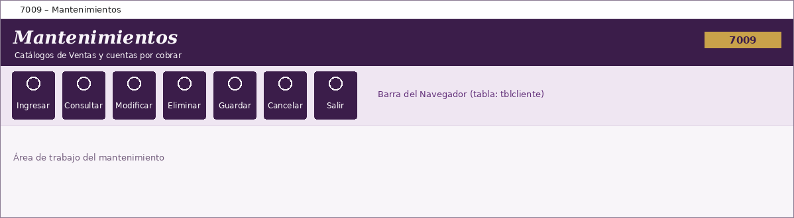

|   |
| |
Guía de Mantenimientos | Mantenimiento de Clientes | La pantalla de Mantenimientos | Botones del Navegador | Mensajes y problemas frecuentes

Esquema de la pantalla: encabezado con el código 7009, barra del Navegador y área de trabajo.
La pantalla Mantenimientos (código 7009) reúne los catálogos de Ventas y cuentas por cobrar. Se maneja con la barra del Navegador, que está enlazada con la tabla de clientes.
Presione Ayuda en el Navegador en cualquier momento: se abrirá la página de la pantalla que está usando.